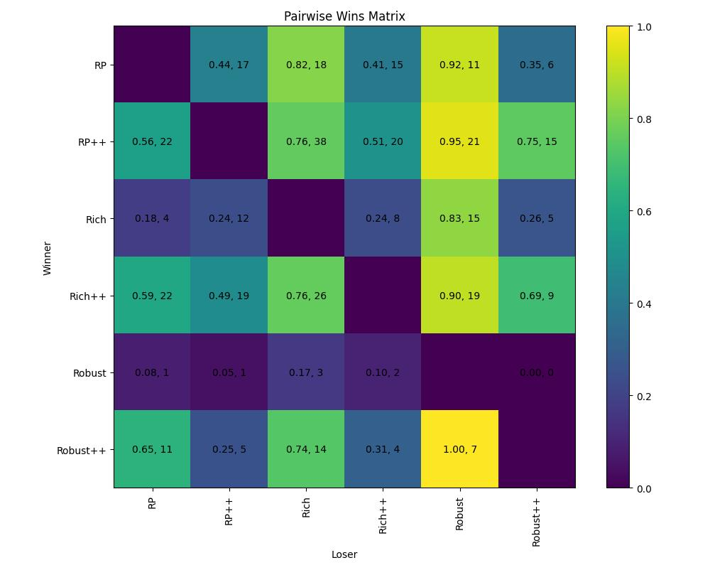
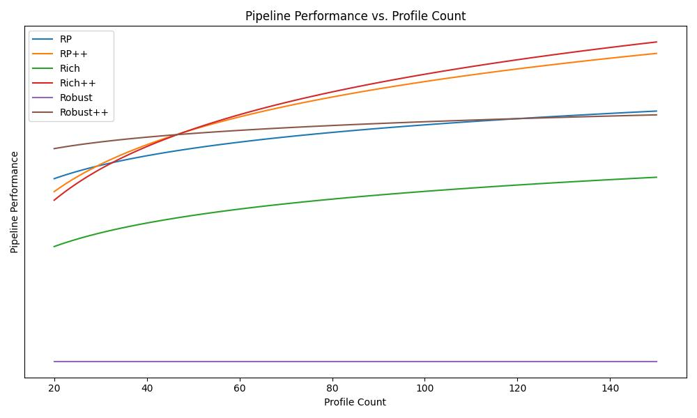

パイプライン比較++ (定量評価)
要約
1000件のブラインドアニメーター比較において、RP++、Rich++、Robust++は従来のパイプラインに対して一貫した選好の向上を示しています。特にキャリブレーションプロファイルが20個以上ある場合に顕著です。改善はアクター固有のデータが増えるほど大きくなり、ベースラインのトラッキング変更ではなく、アイデンティティ適応の向上を示しています。
背景
25.10で新しいパイプライン（++サフィックス付き）をリリースしました。ご興味のある方にお知らせすると、新しい顔トラッキングバックエンドに切り替えました。このバックエンドは、従来のバックエンドと比較して、特にクローズアップ画像（ヘッドマウントカメラなど）において、より安定的で正確な結果を提供します。26.04でパイプラインのいくつかのバグを修正し、新しいトラッキングパイプラインが従来のものをどのように上回るかを適切にテストしました。その結果をご紹介します。
このページでは、リターゲットプロファイルを、アクターの個々の画像と、その画像のアクターと同じ表情を表現するようにリグされた対応するキャラクターとして定義します。
アニメーションの品質は複雑な概念であり、まず第一に非常に主観的です。しかし一般的に、最終的なアニメーションの品質に影響を与える主な要素は以下の通りです：
フェイシャルトラッキングの品質（トラッキングがアクターの表情をどれだけ正確に捉えるか）、
リターゲットプロファイルの品質（プロファイルが実際にアクターとどれだけ一致しているか）、
フェイシャルリターゲットプロファイルの数量（アニメーションのリターゲットに使用されるプロファイルの数）、
外挿方法の品質（アルゴリズムがリターゲットプロファイルを使用してアクターの顔の動きをどれだけ上手く説明できるか）。
今回のアップデートはフェイシャルトラッキングの品質に焦点を当てています。フェイシャルトラッキングの品質を評価するために社内で使用している確立された決定論的メトリクスがありますが、それらが必ずしも最終的なアニメーションの品質の良い信頼できる指標を提供するとは限らないことがわかりました。そのため、プロのアニメーターによる主観的評価に頼ることが多く、本日はその評価結果を共有したいと思います。
評価方法
主観的評価は社内のプロのアニメーター（評価者）によって行われました。
評価者には、異なるパイプラインで生成されたアニメーションのペアが、元のパフォーマンス映像とともに表示されます。評価者は、短いクリップにおいてアクターの表情をより忠実に再現しているアニメーションを選ぶよう求められます。評価者にはどのパイプラインが各アニメーションを生成したかは伝えられません。表示順序（左右）はランダム化されました。総データサイズは1000件の比較で、5名のプロの評価者が参加しました。
クリップの選択： ヘッドマウントカメラで撮影された、プロダクションデータを代表する社内コーパスから5秒のクリップがランダムに選択されました。
評価者への指示： アクターの表情をより忠実に再現しているアニメーションを選択してください。元のパフォーマンス映像が参照として表示されます。
リプレイ： 評価者は何度でもクリップを再生できます。
表示方法： クリップは並べて表示され、参照パフォーマンス映像は中央または両側に表示されます（評価者の選択）。
パイプラインの選択： パイプラインは以下のリストからランダムに選択されます： RP、Rich、Robust、RP++、Rich++、Robust++。ただし、Robustはプロダクションで広く使用されていないため、比較回数が少なくなっています。
プロファイルの選択： Range of Motion (ROM) セットから20個以上のプロファイル、他の映像から0～100個のプロファイル（プロダクションの初期段階から蓄積されたもの）、処理中の映像から0～5個のプロファイルを想定しています。これは、初期には少数のプロファイルのみが利用可能で、後期にはより多くのプロファイルが利用可能になるプロダクションの各段階を忠実に再現しています。
各比較は1名の評価者によって評価されます。重複する割り当てを含む小規模なパイロットスタディでは、評価者間の一致率は高いものでした。
本研究は主にレガシーパイプラインとその新しい++版の比較に焦点を当てています。また、より多くのプロファイルが利用可能な場合にどのパイプラインが最も性能が良いかについても検討しています。
レガシーRobustはプロダクションで広く使用されていないため、比較回数が少なくなっています。
結果
勝敗マトリクス

各パイプライン間の比較の生データを示します。全体として、新しいパイプラインであるRP++、Rich++、Robust++が従来のパイプラインを上回る傾向にあることが容易に確認できます。
このマトリクスは全プロファイル数にわたる結果を集約していることに注意してください。以下のBradley-Terryモデルはプロファイル数がパイプライン性能に与える影響を分離しています。
Bradley-Terryモデル
さらに、Bradley-Terryモデルを用いて各パイプラインの性能を相互にモデリングしています。
パイプラインの性能は以下のようにモデル化されます：
ここで、\(P(pipe_a > pipe_b)\)はパイプラインbと比較された際にパイプラインaが選択される確率、\(\beta\)はパイプラインの基本性能、\(s\)はプロファイル数、\(\phi\)は\(s\)に対する共有のグローバルな依存性、\(\delta\)はパイプラインの性能に対する追加データの限界効果を表します。
項 |
意味 |
|---|---|
β |
最小データでのソルバーの固有品質 |
δ |
ソルバーが追加データを品質に変換する効率 |
φ |
グローバルな収穫逓減効果 |
性能 vs. プロファイル数
\(\beta, \delta, \text{and } \phi\)を求めた後、各アルゴリズムの異なるプロファイル数における性能を可視化できます。

Y軸は推定Bradley-Terry強度を表し、レガシーRobustがベースラインとして0に固定されています。高い値は評価者の選好がより強いことを示します。この値はモデルの\(\beta + \delta \cdot \log(1+s)\)に対応します。
グラフから、すべての新しいパイプラインの性能は従来のリファレンスパイプラインRPと同等です。セッションにプロファイルが追加されるにつれて、レガシーパイプラインと新しいパイプラインの性能差が拡大します。
レガシーRobustはBradley-Terryモデルの基準ベースラインとして機能します（強度は0に固定）。これはマルチアクターセッション向けに設計されており、他のパイプラインが共有する単一アクターの前提に反するユースケースです。これが、この単一アクター評価における相対的に低い性能を説明しています。Robustが適切な場合の詳細はパイプラインの比較を参照してください。
結論
1000件のブラインドアニメーター比較において、新世代パイプライン（RP++、Rich++、Robust++）は従来のパイプラインに対して一貫した選好の向上を示し、利用可能なキャリブレーションプロファイルが増えるほど改善が大きくなります。